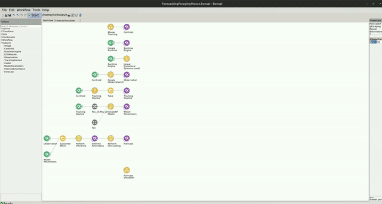

Forecasting Foraging Mouse Example
The code for this repo can be found here.
In the following example, you can see how the Kalman Filter can be use to forecast the future kinematics of a mouse behaving in a foraging arena. This example is an extension to the Foraging Mouse example with the addition of performing forecasting.
Dependencies
If you used the environment bootstrapping method, you dont have to worry about the package dependencies, as these should be already installed. However, if creating a new environment or integrating into an existing one, you will need to install the following packages:
- Bonsai - Core v2.8.1
- Bonsai - Design v2.8.0
- Bonsai - Editor v2.8.0
- Bonsai - ML v0.2.0
- Bonsai - ML LinearDynamicalSystems v0.2.0
- Bonsai - ML Visualizers v0.2.0
- Bonsai - Scripting v2.8.0
- Bonsai - Scripting Python v0.2.0
- Bonsai - Vision v2.8.1
- Bonsai - Vision Design v2.8.1
Dataset
The video for this example was generously provided by the Sainsbury Wellcome Centre Foraging Behaviour Working Group. (2023). Aeon: An open-source platform to study the neural basis of ethological behaviours over naturalistic timescales, https://doi.org/10.5281/zenodo.8413142
You can download the ForagingMouseExampleVid.avi video file here: https://doi.org/10.5281/zenodo.10629221. The workflow expects the video to be placed into the datasets folder but if you prefer to keep the video elsewhere, simply change the Filename property of the MouseTracking group node to point to the correct location.
Workflow
The workflow is similar to the workflow used to infer the kinematics of a mouse during foraging (see example here)[https://github.com/bonsai-rx/machinelearning-examples/tree/main/examples/LinearDynamicalSystems/Kinematics/ForagingMouse] with the addition of a few nodes to forecast the future kinematics of the mouse.
You can find specific information about the tracking workflow and model inference workflow by going to the Foraging Mouse example. In addition to the tracking workflow and model inference, only a few nodes are needed to perform optimization of the models parameters. Following the PerformInference node, which sends notifications to the InferredKinematics subject, the PerformForecasting node is used to make predictions about the kinematics of the mouse for a certain number of steps into the future, defined by the Timesteps property. The output of PerformForecasting is a type of Forecast, which contains a list of ForecastResult corresponding the predicted KinematicState at each timestep.
The Forecast can be visualized alongside the existing data by opening up the ForecastVisualizer group node, like so:
